Abra o Flowlab e entre em MY GAMES


O clipe repete sozinho. Repare onde o cursor vai antes de clicar.
Foto da tela.
Abra o navegador em flowlab.io e entre com a sua conta.
No alto da página, clique em My Games. Aparecem os jogos que você já fez.
- Não lembro a senha
- Chame o professor. Não crie conta nova: os seus jogos estão na antiga.
- A lista está vazia
- Confira se entrou com a mesma conta das outras aulas.
Crie um jogo novo

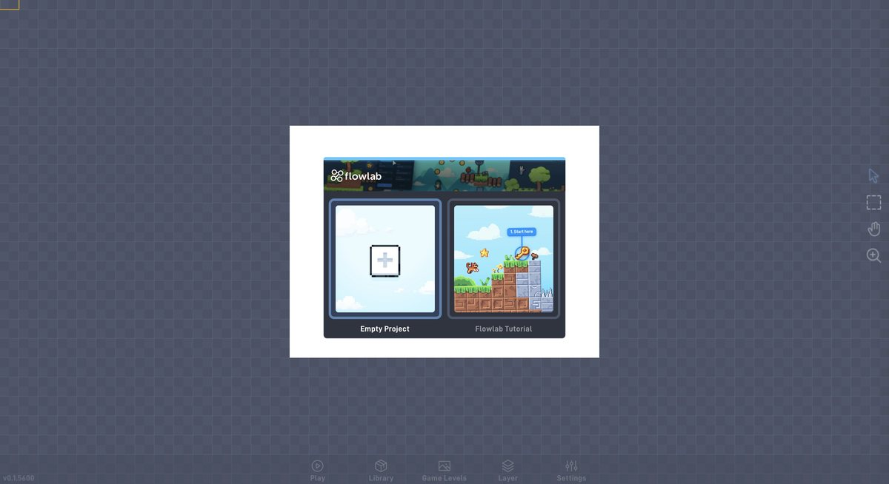
O clipe repete sozinho. Repare onde o cursor vai antes de clicar.
Foto da tela.
Clique no botão verde New Game, no canto de cima à direita da lista.
Abre uma tela com os tipos de projeto.
- Não acho o New Game
- Ele é o único botão verde da página, no alto à direita.
Escolha o PROJETO VAZIO


O clipe repete sozinho. Repare onde o cursor vai antes de clicar.
Foto da tela.
Na tela dos tipos, clique em Empty Project — o projeto vazio.
Abre o editor com a folha branca quadriculada.
- Escolhi outro e veio um jogo pronto
- Volte em My Games, apague esse e comece pelo Empty Project.
A primeira tela: o TÍTULO
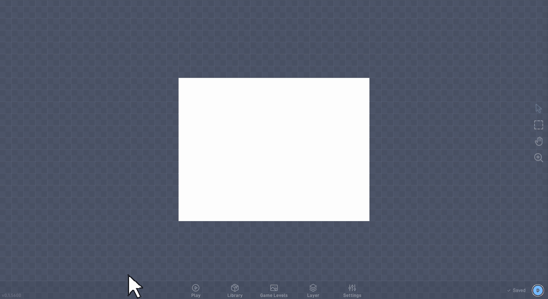
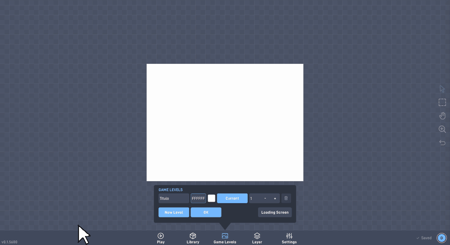
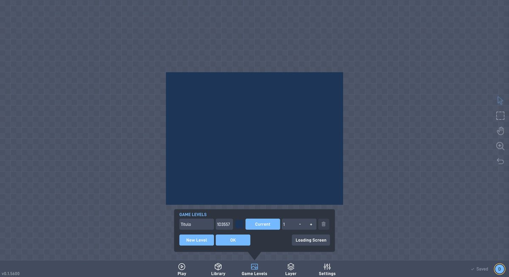
O clipe repete sozinho. Repare onde o cursor vai antes de clicar.
Foto da tela.
Clique em Game Levels, na fileira de baixo. Aparece uma linha por tela do jogo — por enquanto, uma só.
1. No primeiro campo, onde está escrito Level 1, apague e escreva Titulo. Aperte Tab.
2. Abra o painel de novo e, no campo da cor (FFFFFF), apague, escreva 1D3557 e aperte Enter.
Esta é a tela de título: azul-escura, para o botão aparecer bem.
- Digitei e não mudou
- Aperte Enter depois da cor e Tab depois do nome. Sem isso o campo não vale.
- O painel fechou sozinho
- É normal depois do Enter. Clique em Game Levels de novo.
Crie o botão
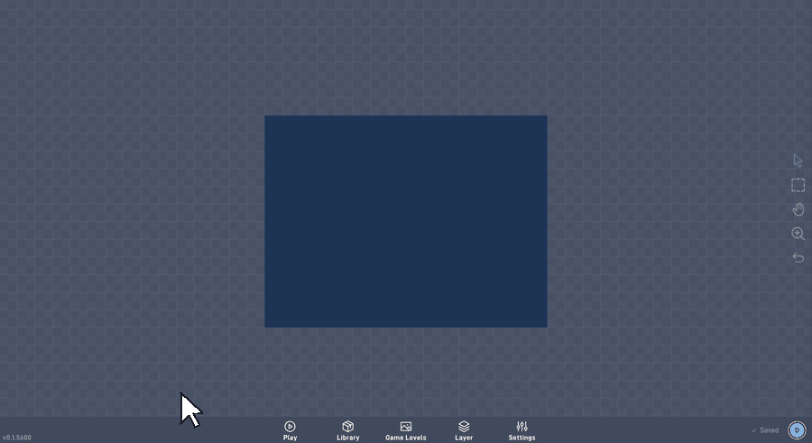
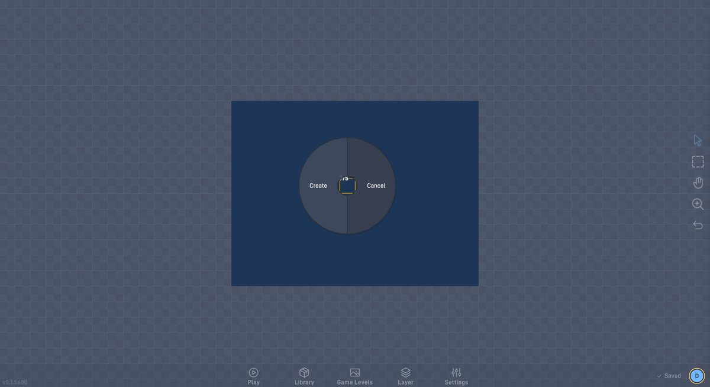
O clipe repete sozinho. Repare onde o cursor vai antes de clicar.
Foto da tela.
Clique uma vez no meio da folha escura.
Abre a roda com Create e Cancel.
- Cliquei fora da folha
- Clique dentro do retângulo escuro. Fora dele não nasce objeto.
Escolha CREATE e escreva BOTAO
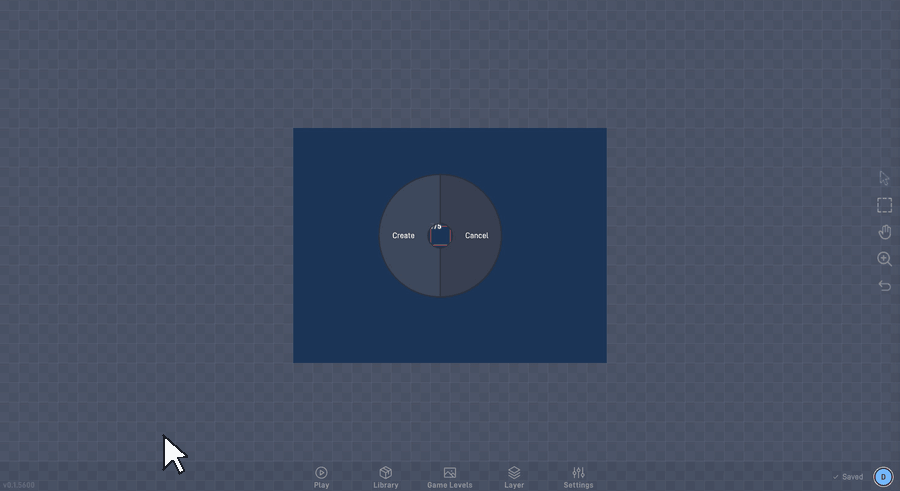
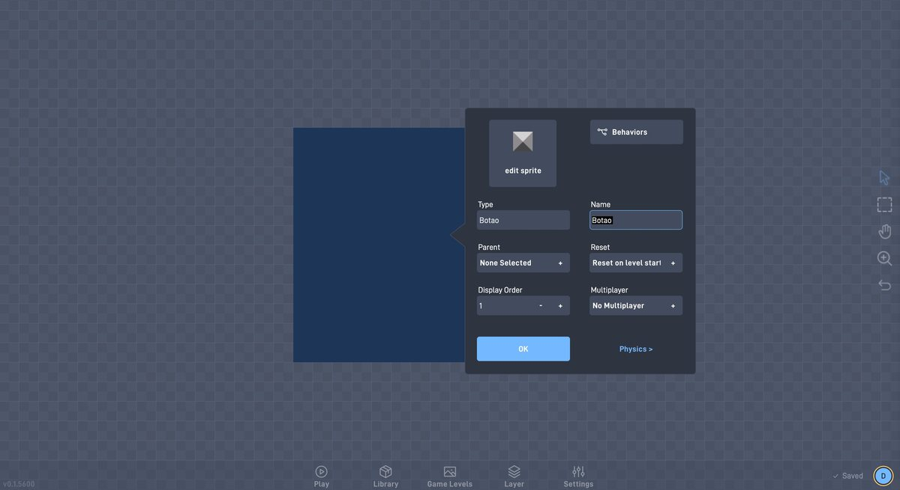
O clipe repete sozinho. Repare onde o cursor vai antes de clicar.
Foto da tela.
Na roda, clique em Create, na metade de cima. Abre o painel do objeto novo.
No campo Name escreva Botao e aperte Tab. No campo Type, escreva Botao também.
- Escrevi só no Name
- Clique no campo Type e escreva lá também.
- Escrevi com acento
- Escreva sem acento. Acento em nome de peça dá problema mais para a frente.
O desenho do botão
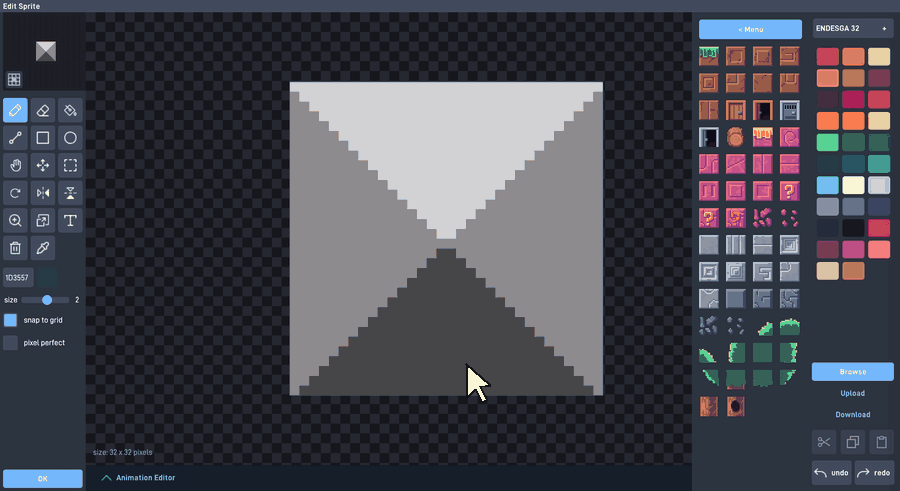
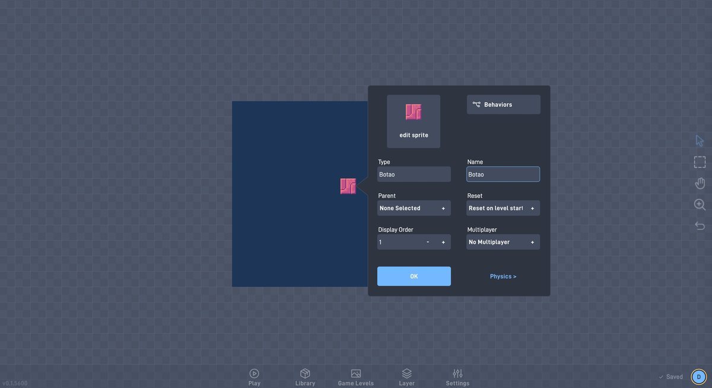
O clipe repete sozinho. Repare onde o cursor vai antes de clicar.
Foto da tela.
Clique no quadrado edit sprite, à esquerda do painel.
1. Clique em Browse, embaixo da paleta de cores.
2. Se aparecer o botão azul < Menu no alto, clique nele.
3. Clique em Flowlab Sprites e depois na faixa azul Blocks.
4. Clique no tijolo rosa — na primeira coluna, o quinto de cima para baixo.
Feche no OK, no canto de baixo à esquerda. Feche também o painel do objeto.
- Não acho o Browse
- Ele fica embaixo da paleta de cores, na coluna da direita.
- Peguei outro desenho
- Qualquer bloco serve de botão. Mas o rosa aparece melhor no azul-escuro.
Crie a FASE 1
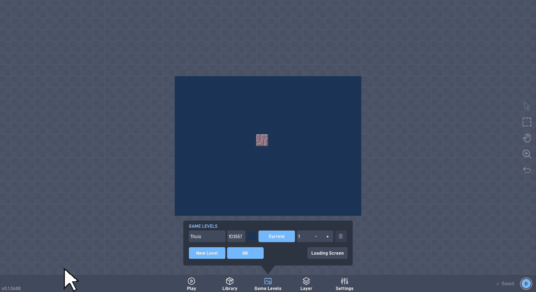
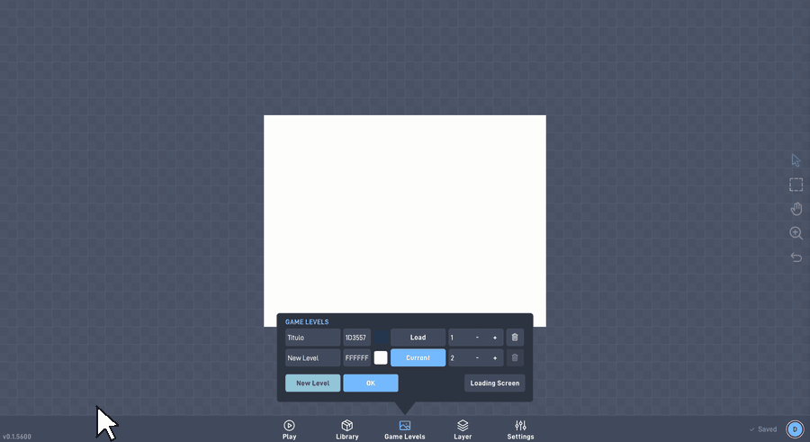
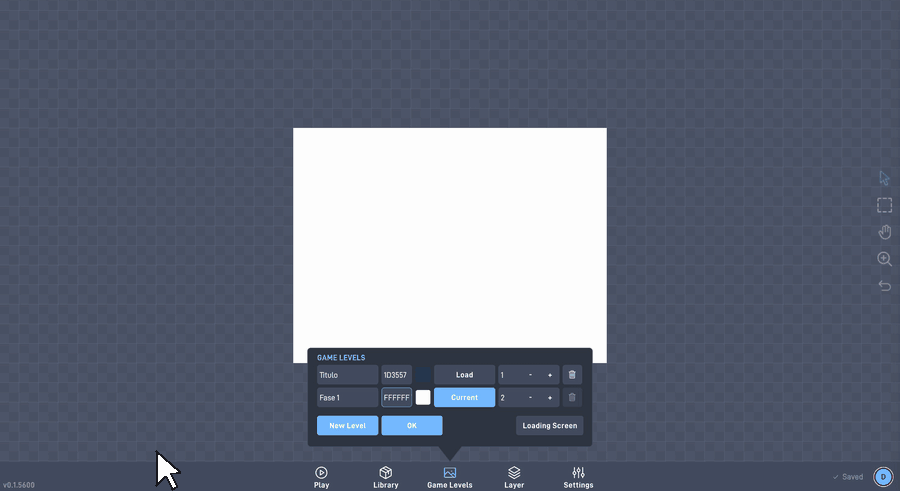
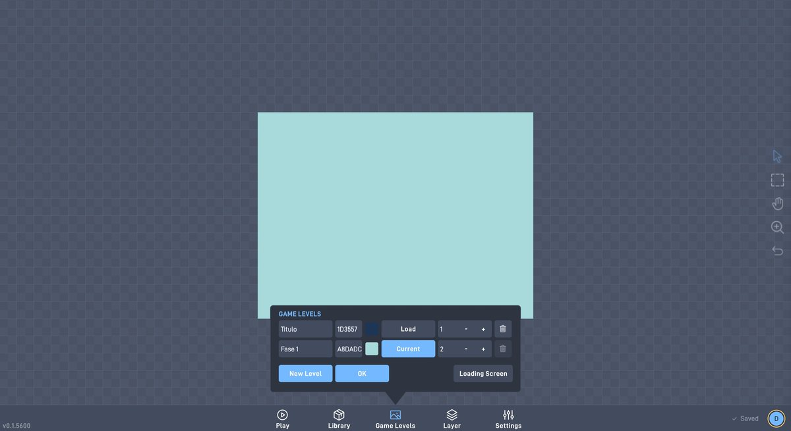
O clipe repete sozinho. Repare onde o cursor vai antes de clicar.
Foto da tela.
Abra o painel Game Levels de novo.
1. Clique em New Level. Nasce uma segunda linha, chamada New Level, com céu branco. A nova fase nasce vazia.
2. Na linha de baixo, apague o nome e escreva Fase 1. Aperte Tab.
3. Abra o painel de novo e, na linha de baixo, escreva A8DADC no campo da cor. Aperte Enter.
Cada fase tem o seu céu. Repare que a linha nova é a que mostra Current: ao criar a fase, o editor foi para ela. A linha do título passou a mostrar Load.
- Mudei a cor da linha de cima
- A fase 1 é a linha de baixo. A de cima é o título.
- O nome não mudou
- Clique no campo, apague tudo com Cmd+A e escreva. Aperte Tab no fim.
O botão manda para a PRÓXIMA fase
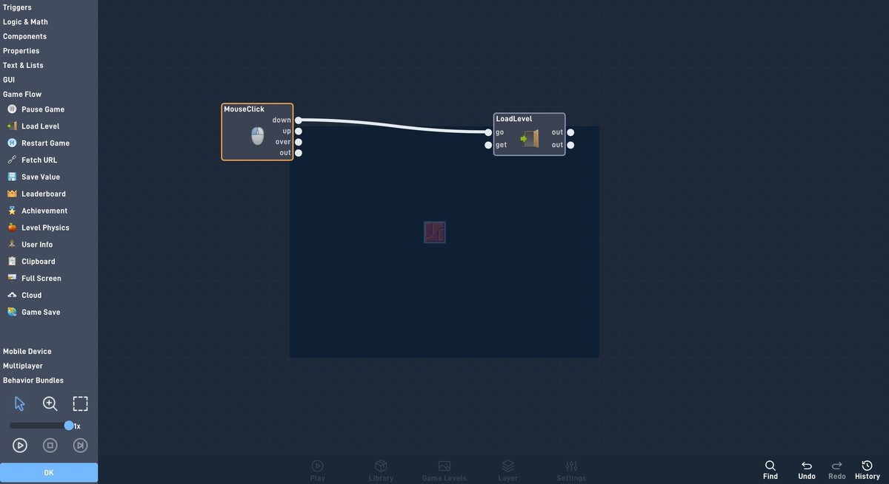
Foto da tela.
Abra o painel Game Levels e clique em Load na linha do Titulo: volta para a tela do botão. Clique no botão e depois em Behaviors.
1. Em Triggers, arraste o MouseClick.
2. Em Game Flow, arraste o Load Level.
Um fio: de down do MouseClick até go do Load Level.
O MouseClick dispara quando o jogador clica em cima do objeto — o botão. O Load Level já nasce pronto para carregar a próxima fase: não precisa mexer em nada nele.
Lendo em voz alta: quando clicarem em mim, carregue a próxima fase.
- Não acho o Load Level
- Ele está em Game Flow, na coluna da esquerda.
- O botão não responde ao clique
- O fio foi para get em vez de go. Ele tem de chegar na bolinha de cima.
- Estou na tela errada
- Se a folha está clara, você está na Fase 1. Volte ao painel e carregue o Titulo.
O TEXTO do botão
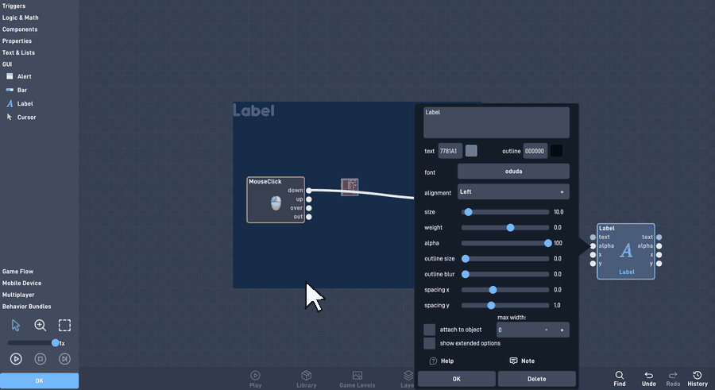
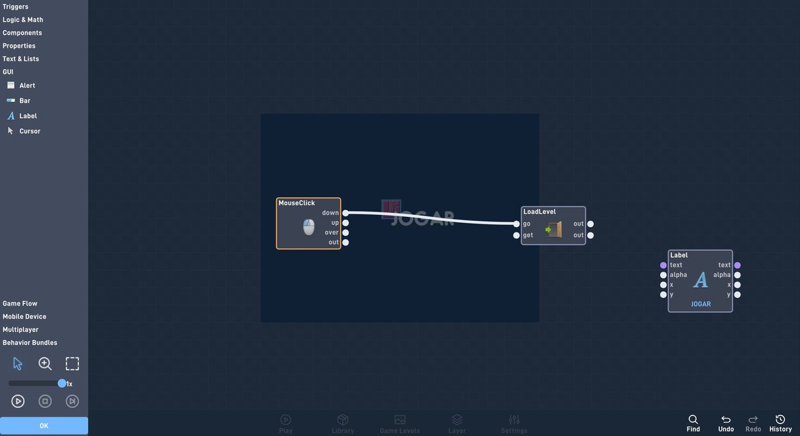
O clipe repete sozinho. Repare onde o cursor vai antes de clicar.
Foto da tela.
Ainda na mesa do botão, em GUI, arraste o Label. Clique devagar nele.
1. Na caixa de texto, no alto do painel, apague e escreva JOGAR.
2. Lá embaixo, marque a caixinha attach to object.
Sem o attach to object o texto fica solto no canto da folha. Com ele, o texto gruda no botão e passa a ser o rótulo dele.
- O texto ficou no canto da folha
- Faltou marcar attach to object.
- Não acho a caixa de texto
- Ela é a primeira coisa do painel, no alto, com a palavra Label escrita.
Jogue: clique no JOGAR
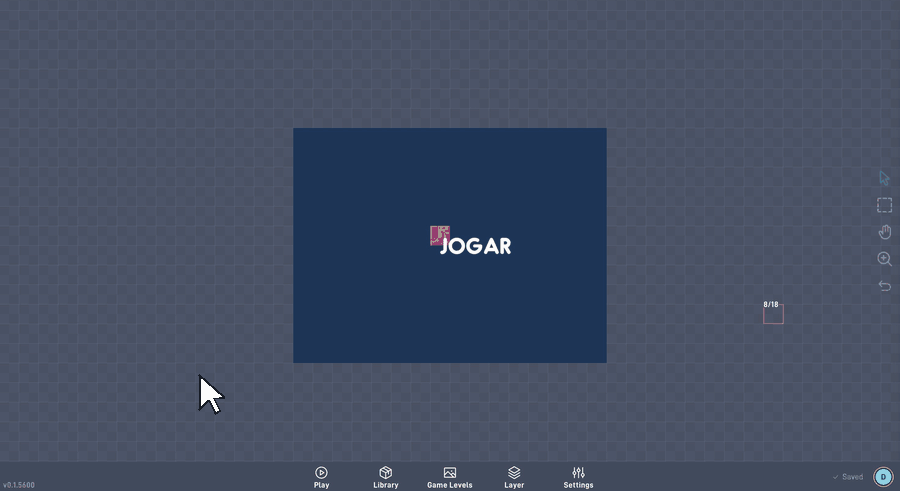
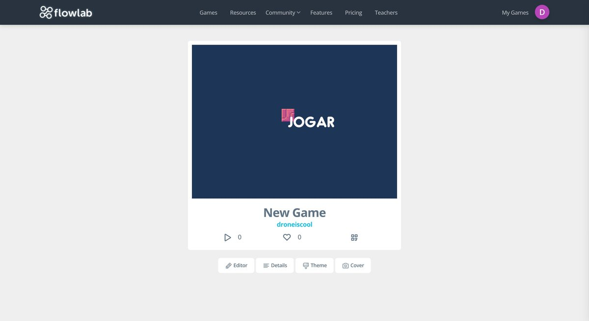
O clipe repete sozinho. Repare onde o cursor vai antes de clicar.
Foto da tela.
Feche as duas telas e clique em Play.
O jogo abre na primeira tela, a do título. Clique no botão: o céu muda para azul-claro — é a Fase 1, que ainda está vazia.
- O jogo abre numa tela sem botão
- O Play começa na tela que está aberta no editor. Abra Game Levels e clique em Load na linha do Titulo antes de jogar.
- Cliquei e nada aconteceu
- Clique bem em cima do tijolo, e não no espaço em volta. E confira o fio do MouseClick.
O JOGADOR, na Fase 1
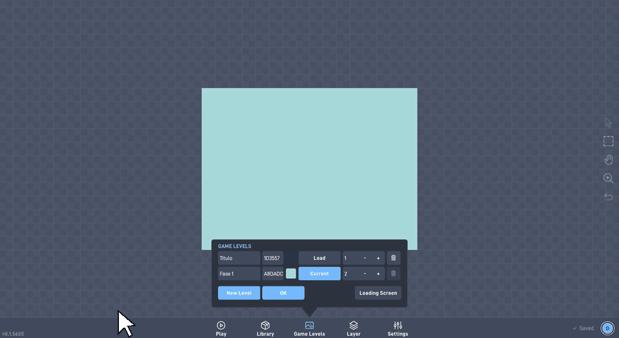
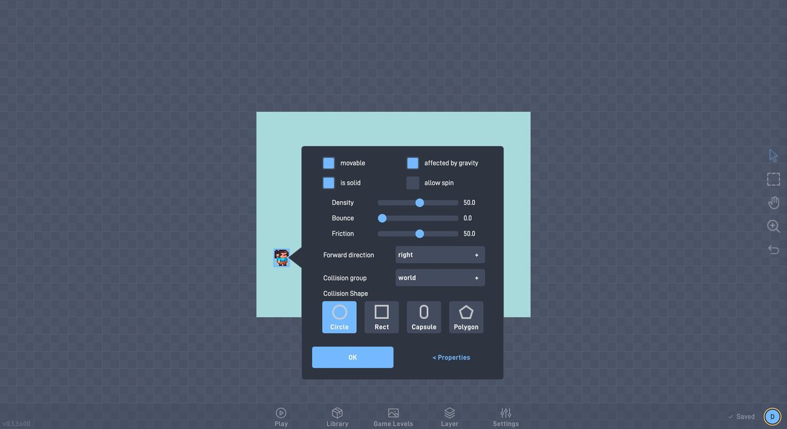
O clipe repete sozinho. Repare onde o cursor vai antes de clicar.
Foto da tela.
Volte ao editor. Abra Game Levels e clique em Load na linha da Fase 1: a folha fica azul-clara e vazia.
Clique numa casa bem à esquerda, na altura do meio, e escolha Create. Em Name e em Type escreva Jogador. Em edit sprite, pelo Browse, em Flowlab Sprites › Characters, pegue o primeiro boneco.
Em Physics >: movable — marque; affected by gravity — deixe marcada. Feche no OK.
- Criei o boneco na tela do título
- Você esqueceu de carregar a Fase 1. Apague o boneco (Delete) e carregue a fase certa.
- A folha está escura
- Essa é a tela do título. Carregue a Fase 1, a linha de baixo.
Faça o jogador correr e pular
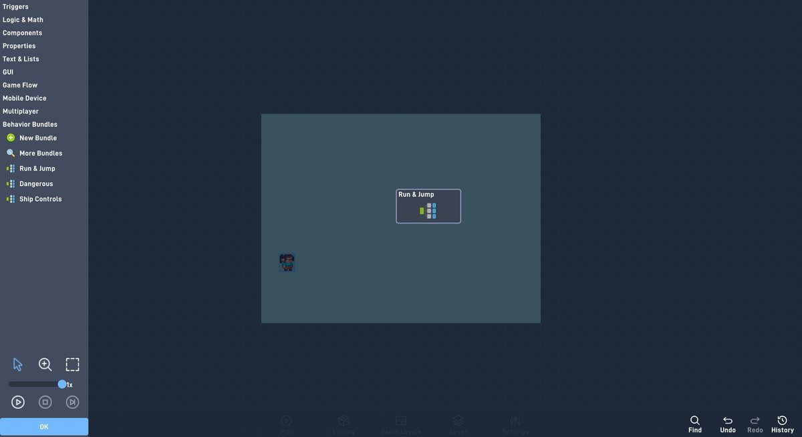
Foto da tela.
Com o jogador aberto, clique em Behaviors.
Na coluna da esquerda, lá embaixo, clique em Behavior Bundles e arraste o Run & Jump para o meio da mesa.
É o mesmo pacote das aulas 2, 6, 7, 8 e 9. Espere uns segundos antes de fechar.
- Arrastei e não caiu nada
- Solte no meio da mesa, longe da beirada.
- Não acho Behavior Bundles
- É o último item da coluna da esquerda. Role até o fim.
Faça o chão
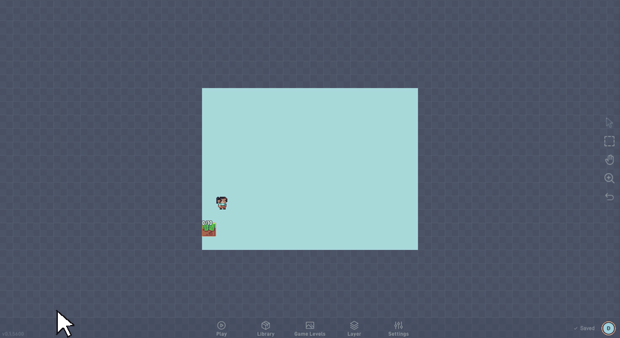
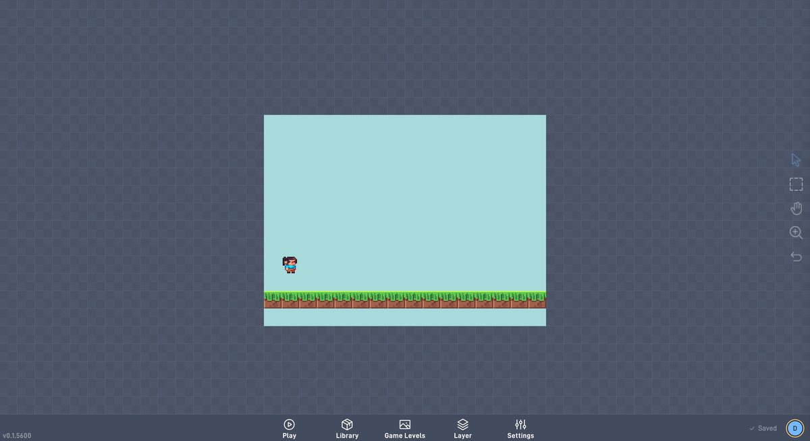
O clipe repete sozinho. Repare onde o cursor vai antes de clicar.
Foto da tela.
Feche as duas telas. Clique na casa do canto esquerdo da penúltima fileira de baixo e escolha Create. Em Name e em Type escreva Chao. Em edit sprite, pelo Browse, pegue o primeiro bloco de Flowlab Sprites › Blocks. Feche no OK.
Agora repita pela fileira toda: clique nela, escolha Clone, clique nas casas à direita até a ponta, e termine em done cloning.
- Ficou um buraco
- Clique na casa vazia, escolha Clone e preencha.
- O jogador cai para fora da folha
- Exatamente por isso o chão não pode ter falha.
A ESTRELA no fim do caminho
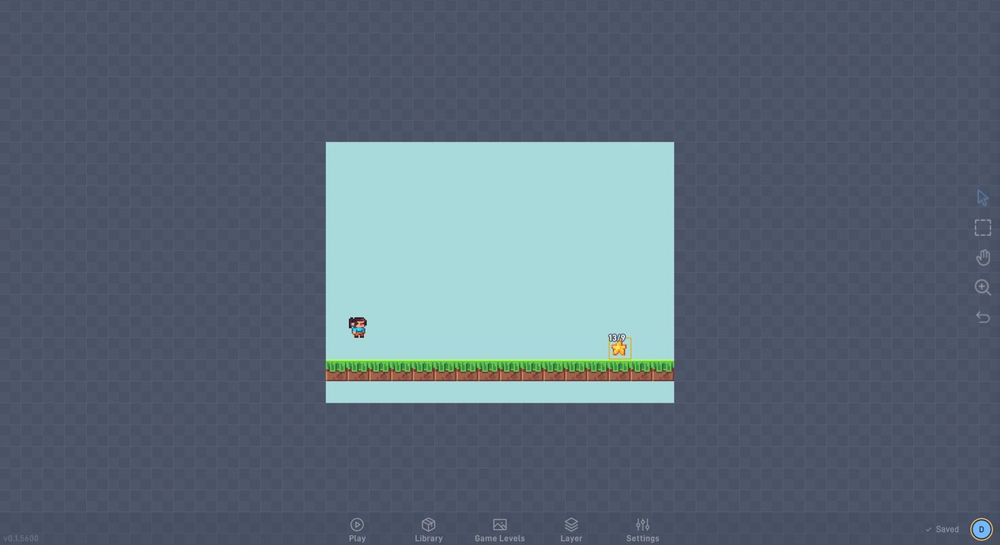
Foto da tela.
Clique numa casa do chão bem à direita e escolha Create. Em Name e em Type escreva Estrela. Em edit sprite, pelo Browse, em Flowlab Sprites › Objects, pegue a estrela dourada. Feche no OK.
Não mexa na física dela: a estrela fica parada, e basta o jogador encostar.
- Não acho a estrela
- Ela está em Objects, e é amarela. Role a grade se precisar.
Crie a FASE 2
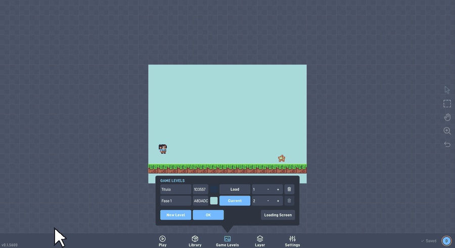
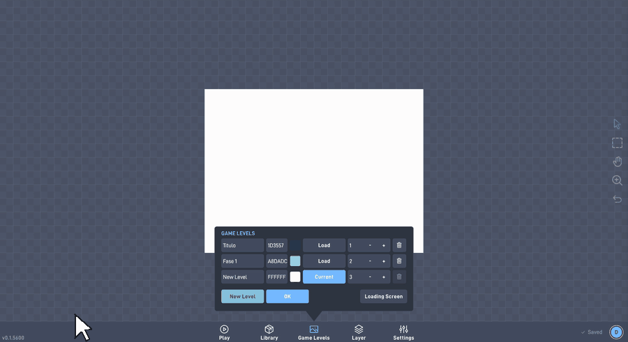
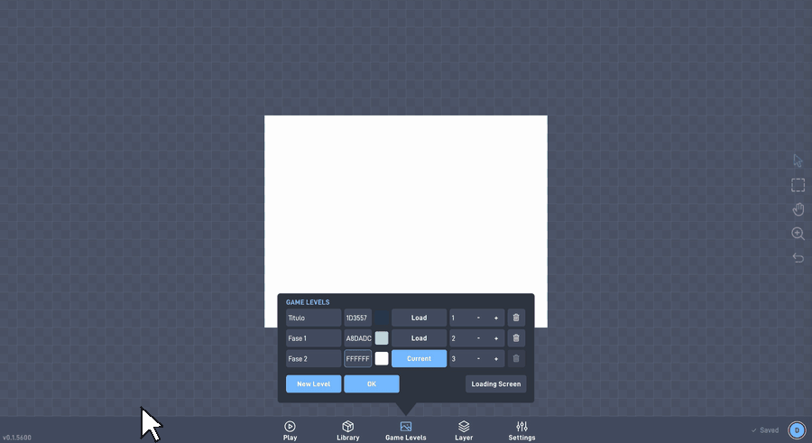
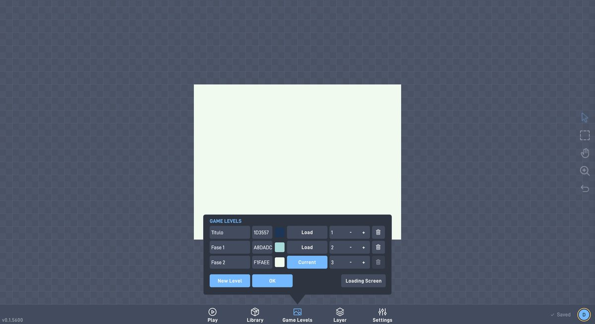
O clipe repete sozinho. Repare onde o cursor vai antes de clicar.
Foto da tela.
A estrela precisa de um lugar para levar, então a próxima fase já tem de existir. Abra Game Levels:
1. Clique em New Level.
2. Na linha de baixo (a terceira), escreva Fase 2 no nome. Tab.
3. Abra o painel de novo e escreva F1FAEE no campo da cor dessa linha. Enter.
Fica um céu quase branco, para a Fase 2 parecer outro lugar.
- Mudei a cor da fase errada
- A Fase 2 é a linha de baixo. Confira antes de escrever.
- O painel está cheio e não vejo a linha nova
- Ela está embaixo. As linhas crescem para cima.
A estrela leva à PRÓXIMA fase
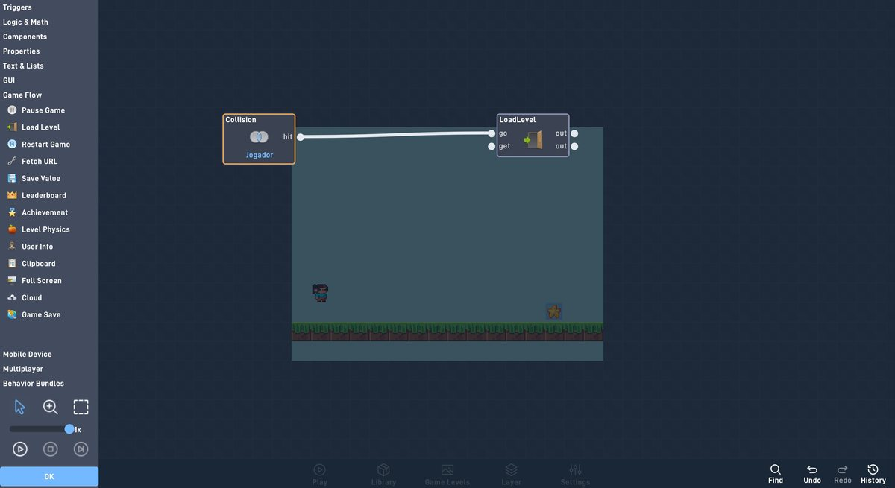
Foto da tela.
Volte à Fase 1 (Game Levels › Load na linha dela). Clique na estrela e depois em Behaviors.
1. Em Triggers, o Collision. Clique devagar nele e, na lista Any Type, escolha Jogador.
2. Em Game Flow, o Load Level.
Um fio: de hit até go.
É a mesma peça do botão, com outro gatilho: o botão carregava a próxima fase quando clicavam nele; a estrela carrega quando o jogador encosta.
- A fase 2 abre assim que o jogo começa
- O Collision ficou em Any Type e está contando o chão. Escolha Jogador.
- Nada acontece quando encosto
- Confira o fio: ele sai do hit e chega no go.
Jogue: da Fase 1 para a Fase 2
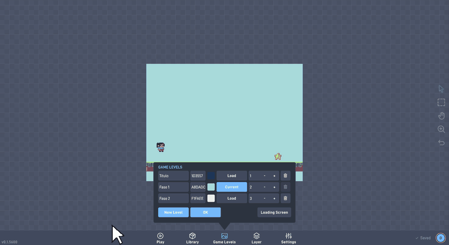
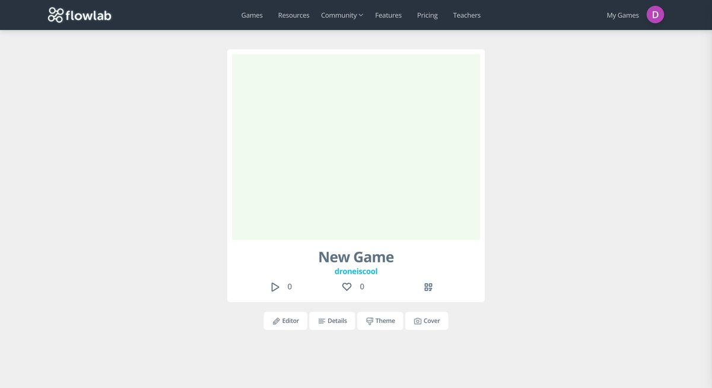
O clipe repete sozinho. Repare onde o cursor vai antes de clicar.
Foto da tela.
Para jogar do começo, abra Game Levels e clique em Load na linha do Titulo — o Play começa na tela que está aberta no editor. Feche e clique em Play. Clique no botão do título e depois, dentro da Fase 1, corra até a estrela.
Quando você encosta, o céu muda para o da Fase 2 — vazia ainda, mas é outra tela.
- O boneco cai para fora da folha
- O chão está com falha. Volte ao passo 14.
- Cheguei na estrela e nada
- Confira o Collision da estrela: ele tem de mostrar Jogador.
A FASE 2, com as peças da Biblioteca
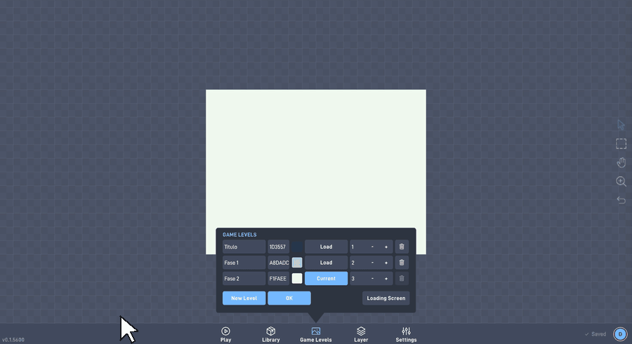
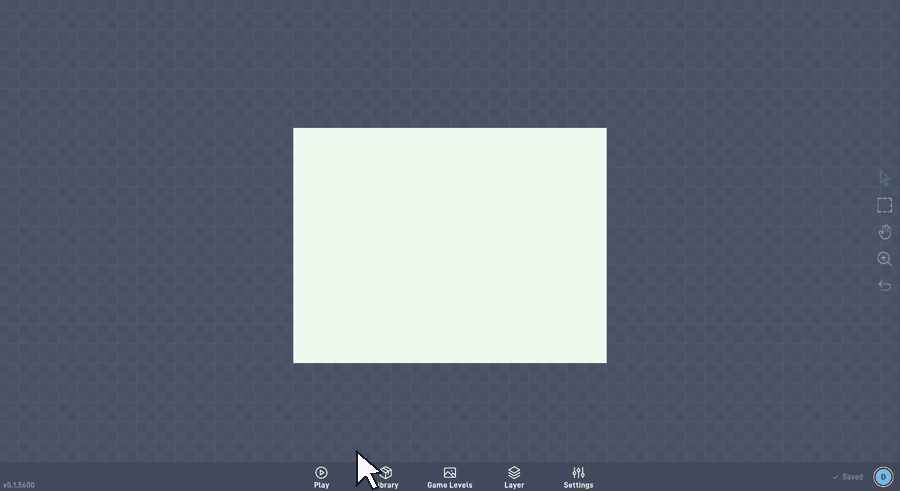
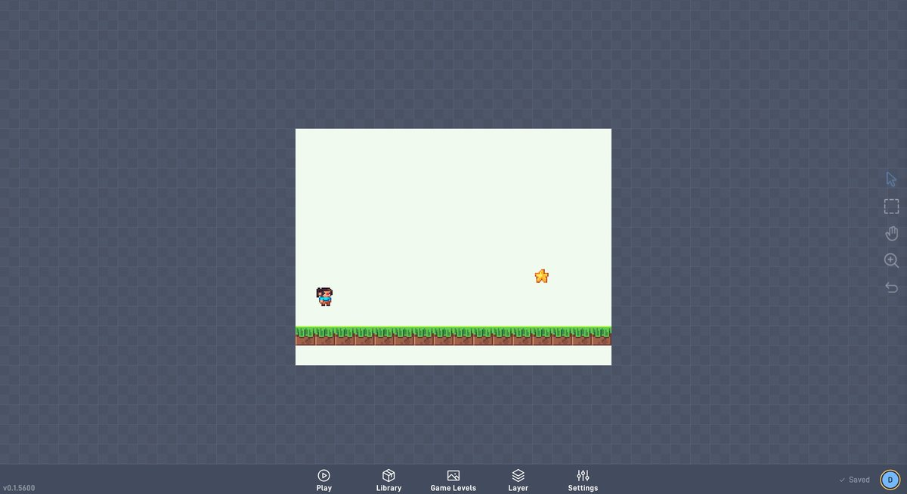
O clipe repete sozinho. Repare onde o cursor vai antes de clicar.
Foto da tela.
Volte ao editor, abra Game Levels e clique em Load na linha da Fase 2. A folha está vazia — mas as peças não sumiram: moram na Library, na barra de baixo.
Clique em Library. Aparece um cartão para cada tipo que você criou. Arraste (não adianta clicar):
1. o Chao para a casa do canto direito da penúltima fileira;
2. o Jogador para a esquerda, um pouco acima do chão — ele cai sozinho;
3. a Estrela para uma casa no ar, à direita.
Feche a Library no OK. Clique no chão, escolha Clone e clique nas casas à esquerda, uma por uma, até a ponta. Termine em done cloning.
Repare no que você não fez: não montou bloco nenhum. Os blocos pertencem ao tipo, e vieram junto — a estrela da Fase 2 já sabe carregar a próxima fase.
- Cliquei no cartão e nada
- Clicar não faz nada. É preciso arrastar o cartão para dentro da folha.
- O chão ficou em cima da Library
- O painel cobre a faixa de baixo. Solte o chão na ponta direita, onde não tem painel.
- Não acho o cartão da Estrela
- Os cartões ficam na ordem em que você criou os tipos. Role o painel se precisar.
A tela de VITÓRIA
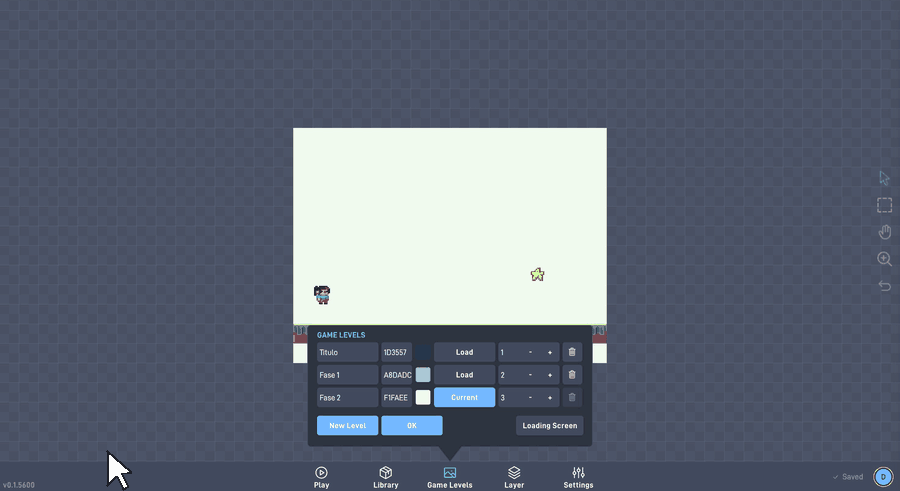
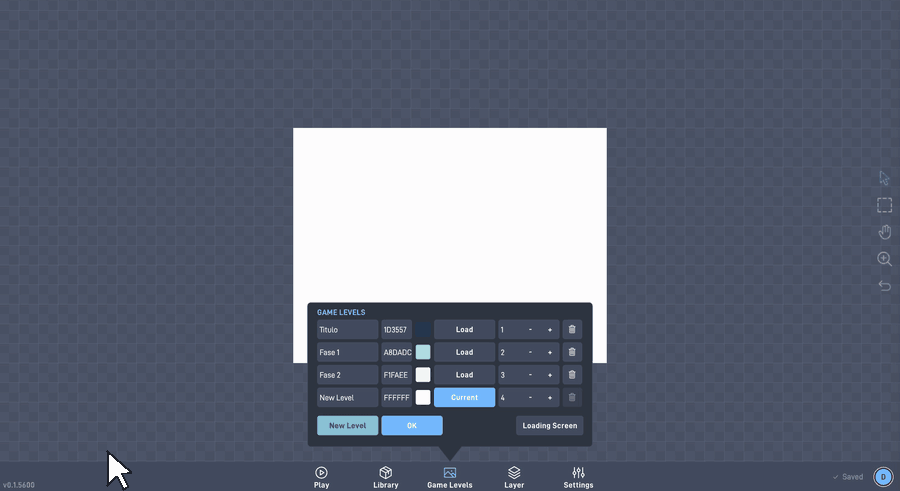
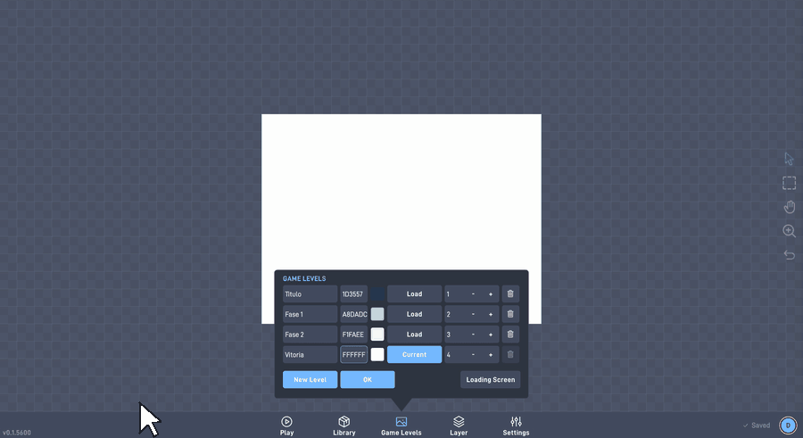
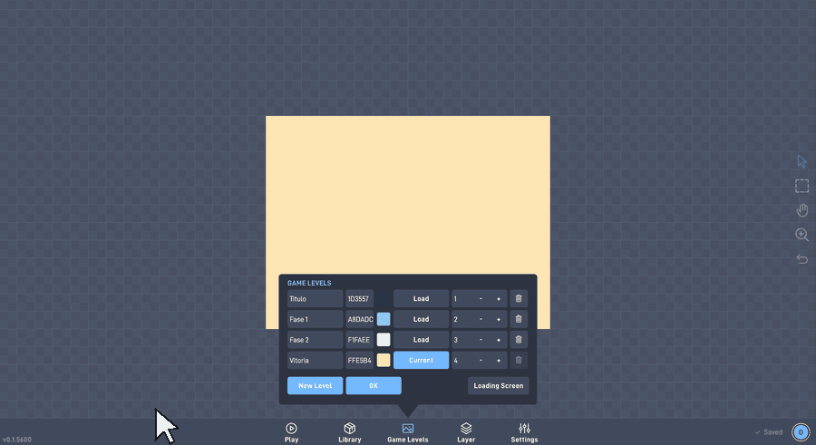
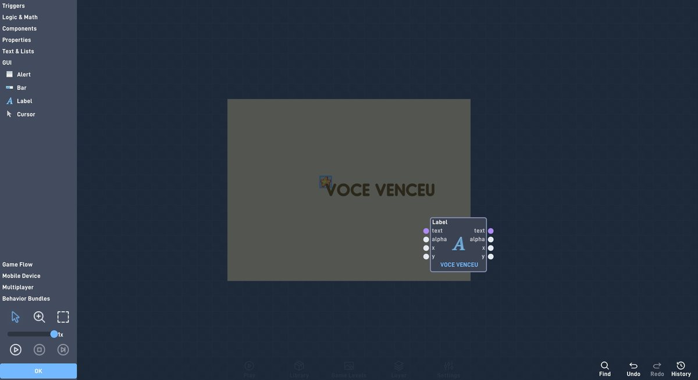
O clipe repete sozinho. Repare onde o cursor vai antes de clicar.
Foto da tela.
Abra Game Levels: New Level, nome Vitoria, cor FFE5B4 (um amarelo-areia). A fase nova abre sozinha no editor.
Crie um objeto no meio da folha: Name e Type Faixa, e o desenho da estrela dourada de Objects. Clique nele e em Behaviors:
1. Em GUI, o Label. Clique devagar nele, escreva VOCE VENCEU na caixa de texto e marque attach to object.
É o mesmo truque do botão: um Label grudado num objeto. Aqui ninguém clica em nada — a tela é só o fim.
- O texto está no canto da folha
- Faltou marcar attach to object.
- A Fase 2 não leva à Vitória
- A estrela da Fase 2 é do mesmo tipo da da Fase 1: o Load Level carrega a próxima. Confira se a Vitória é a linha logo abaixo da Fase 2.
Jogue tudo e mande o link
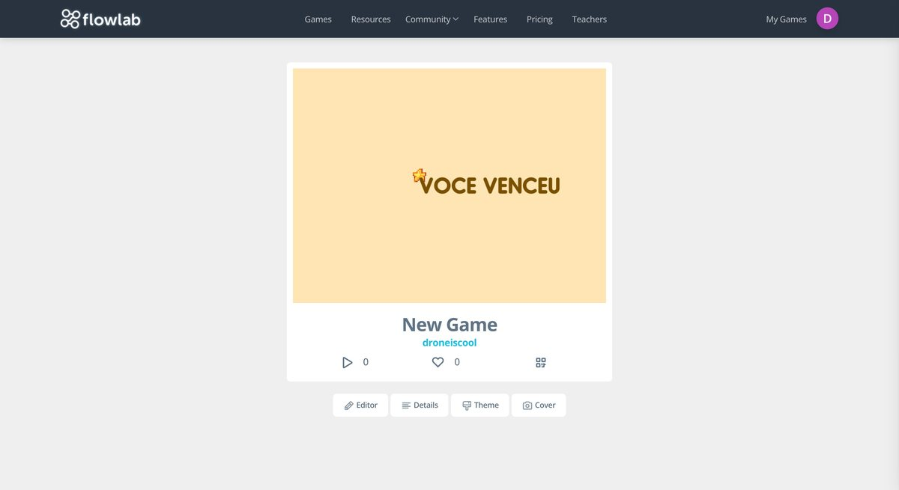
Foto da tela.
Carregue o Titulo no painel Game Levels, feche as duas telas e clique em Play.
Clique no botão. Corra até a estrela da Fase 1. Na Fase 2, corra e pule para pegar a estrela no ar. Aparece a tela de Vitória.
Para mandar para alguém: copie o endereço da barra do navegador e mande. Quem abrir vai ver o título, jogar as duas fases e chegar ao fim.
- O jogo abre na Fase 1 ou na Fase 2
- O Play começa na tela aberta no editor. Carregue o Titulo antes de jogar.
- Não alcanço a estrela da Fase 2
- Ela está no ar: corra e pule ao mesmo tempo. Ou arraste-a para mais perto do chão.
- Quero mais fases
- Crie outra com New Level e arraste as peças da Library. A Vitória tem de ser a última linha.